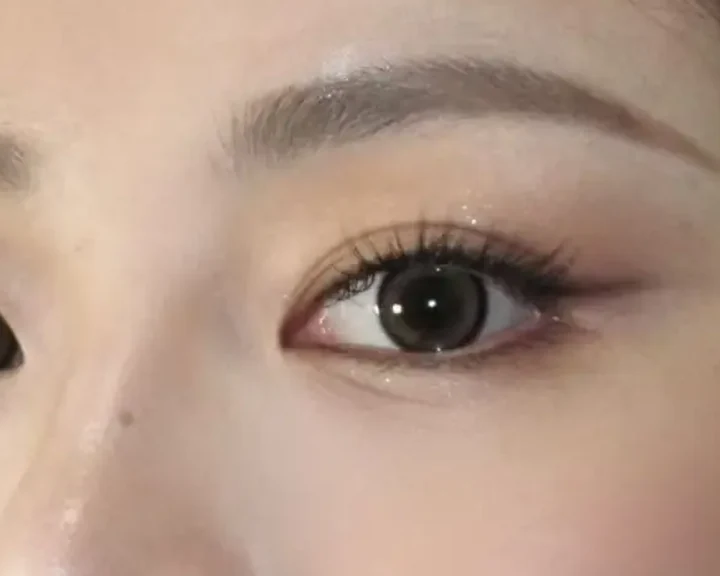
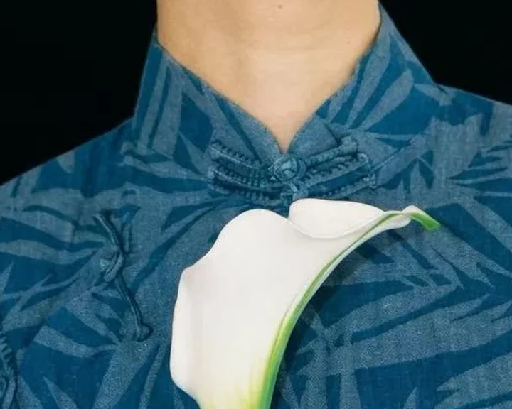

Beauty begins with a person.
Not a preset.
A good look has
something to say.
It should sound like you.
We consider your features, your clothes, the light and the way you want to feel. The work is in the balance.
The SCULP Edit / A personal reference
A little of this.
A little of you.
You might love one artist's eye line and another's hair shape. Start with three suggestions. Review each detail, then bring your edit to our conversation.



Three references. One conversation.
Your artist will adapt these references to your features, outfit and occasion. You can refine the artist match together.
Prefer one complete look?Explore three full studies
One complete direction.Then make it personal.
Choose a direction. Notice the decisions.
Keep what speaks to you for our conversation.

A study in fresh bridal
Fresh, with definition.
How do you define the eyes and still keep the whole look light?
Select a detail.

A study in modern chinese
Tradition, in a new register.
How can the beauty support a strong collar rather than compete with it?
Select a detail.
A study in classic glamour
A little more presence.
How do stronger eyes, lips and accessories hold together?
Select a detail.
Your next occasion
What brings
you here?
Different eyes. A shared standard.
Find your people.

Miranda
Signature Artist / Founder
Editorial bridal

Mira
Director Artist
New Chinese Style

Angelina
Senior Artist
Korean-inspired freshness

Giselle
Senior Artist
Defined soft glam
You do not need to know who to book yet. Tell us the kind of beauty you connect with; we can guide the match.
The eye behind the studio
Fashion experience.
A personal approach.
Miranda's work spans international Fashion Weeks, runway shows, global-brand campaigns and destination weddings. Over ten years in beauty have shaped an editorial eye that starts with the person in front of her.
SCULP brings that approach into a studio of individual artists, each with their own strengths and a shared standard of preparation and care.
Inside SCULPWhat stays with them
After the final touch.
“You are an absolute artist. I felt like the most beautiful version of myself, and my makeup held up perfectly through all the happy tears and dancing.”
“Every look felt fresh and original. It is incredibly rare to find an artist with both taste and technical skill who can create makeup at an editorial level.”
“We mixed up the time and messaged Miranda early that morning. She reassured us, helped coordinate with the photographer, and kept us calm through the rain. The final look was exactly what I hoped for.”

Come as you are.
A little space
for your next look.
Our private Markham studio is a calm place to plan, try and refine. Complimentary parking is available around the building.
200 Town Centre BoulevardUnit 409, MarkhamPlan your visit
Something in mind?
Let's make it
personal.
Share your date, occasion and the details that matter. We reply within 24 hours.
Start your enquiry